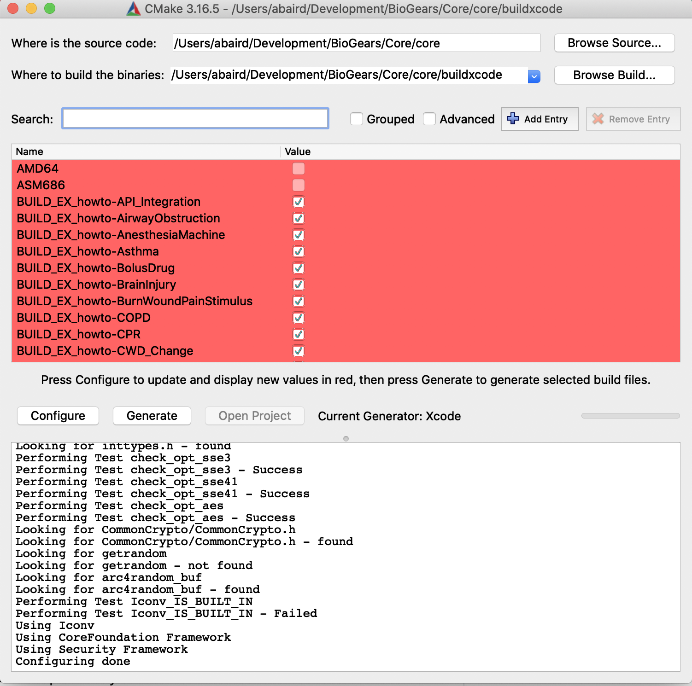
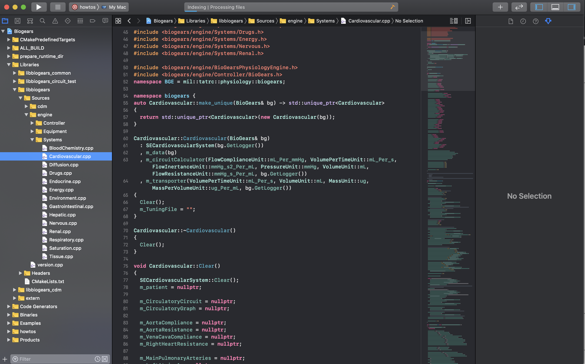
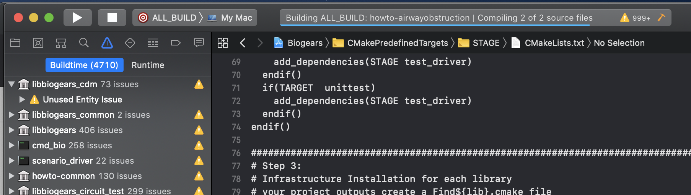

Building and running BioGears on a MacOS
We will complete a mac build step by step and run a scenario file
BioGears on a Mac
These instructions will mostly be taken from the following link.
Cloning and Building
To begin create a suitable directory where you'd like the code to reside. For this example, I'll be cloning and building BioGears in ~/BioGears/Core directory. To perform all of this work we will be using brew package manager. To access brew, on the command line paste in the follow text /usr/bin/ruby -e "$(curl -fsSL https://raw.githubusercontent.com/Homebrew/install/master/install)"
Once you have a directory and the package manager set up, navigate to that newly created directory through the command line and copy the clone link on github. From this directory we will install all the dependencies needed to begin running and using BioGears. To proceed copy and past the following code (to install requirements)
brew install wget
brew install git
brew install ninja
brew install g++
brew install gcc
brew install eigen
brew install log4cpp
brew install xerces-c
brew install xsd
Navigate the core folder (for me, ~/Development/BioGears/Core/core) and create a build directory mkdir build. Next, navigate to that build folder. We will now go through a series a cmake commands to set up the build configuration. We will make a few assumptions; first, we will assume that our install directory will be opt/biogears/usr. We will then link a prefix path. Now from the build folder we can type:
cmake -G "Ninja" -DCMAKE_INSTALL_PREFIX=/opt/biogears/usr \
-DCMAKE_PREFIX_PATH='/usr/local/opt \
-DBiogears_BUILD_JAVATOOLS=OFF \
..
Debugging
If it isn't present you might have forgotten the ‘..’ at the end of the command chain above.
To fix this issue back out to the top directory, for me this will be Core. From Core use the rm command to remove the cloned directory--- BioGears/Core » rm -rf core then re-clone BioGears: --- BioGears/Core » git clone https://github.com/BioGearsEngine/core.git core then create the build folder, navigate to the build folder and re-run the cmake command above. --- BioGears/Core/core/build » cmake -G "Ninja" -DCMAKE_INSTALL_PREFIX=/opt/biogears/usr -DCMAKE_PREFIX_PATH='/usr/local/opt' -DBiogears_BUILD_JAVATOOLS=OFF ..
Hopefully this will create the required file.
Building and Testing Scenario Driver
Now from the build folder, we can build the scenario driver executable. This program creates a serializes in a scenario file, creates a BioGears engine and then pushes actions and data calls to the engine. Its a great place to start understanding how to use BioGears and what the engine is capable of.
To build the scenario driver, simply type (from the build folder) --- BioGears/Core/core/build » ninja scenario_driver, now lets run the scenario driver to test that it's working correctly. First navigate to the runtime directory (if there isn't a generated runtime directory type cmake STAGE from the build directory). From the runtime directory type ../outputs/Release/bin/scenario_driver ./Scenarios/Patient/BasicStandard.xml
To confirm that this file ran, navigate to the ./Scenarios/Patient folder and confirm that there is a BasicStandard.log and BasicStandardResults.csv file. Feel free to look at the log and associated xml, log, and csv files to figure out the structure of a scenario run and how the outputs reflect what you input into the .xml.
Configuring Xcode Build
To configure a build that generates an Xcode project, make a new build folder in core, called core/buildXcode, then in the cmake GUI set up the configuration step as shown in the image:

After you configure the where the source code is and where the build files will be generated (top two lines) as seen in the image. Click the configure button and select Xcode from the generators list that will pop up. There should be no errors, if there are you might need to re-install some of the binaries. Next, click generate, there will be some red text but this step should still finish. Next, click open project and the project should be launched in Xcode. In the next image you can see the folder structure and the Cardiovascular.cpp file which houses all models associated with BioGears cardiovascular system.

You might want to be able to build BioGears targets through the XCode UI. In that case simply configure a scheme. For this example click the scheme button in the top left page, the in the drop down select ALL_BUILD. This will build all the CMAKE targets that are defined. This is good if you want to begin to reference the HowTo files to start making your own application with BioGears! Once the scheme is configured just hit the play button to begin building the ALL_BUILD target. NOTE: there will be a LOT of warnings, but there shouldn't be any errors.

To confirm that the build worked, there should be a newly generated buildxcode folder that was generated (this is different from the one that we had cmake generate, mostly to differentiate between the two build systems). From there confirm that buildxcode/runtime folder. This folder houses all the extra files that are needed for BioGears to run! Confirm that there is a bunch of stuff in this folder (mostly .xml and .config files). Then we can confirm that some of our other projects built, specifically we want to confirm that the HowTo files compiled. Navigate to the where all built binaries are stored. For me, building debug targets, they are located in /Users/abaird/Development/BioGears/Core/core/buildxcode/outputs/Debug/bin. Your bin should look like below for reference:

If you have other issues while building, feel free to post a comment on the community pages ( link)!